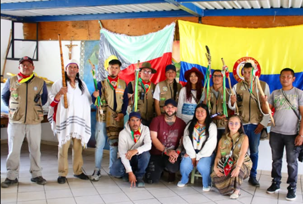

🏛️ Reconocimiento Oficial
Resguardo Indígena Muisca de Fonquetá y Cerca de Piedra
- Fecha de Reconocimiento: 24 de mayo de 2013
- Acto Administrativo: Acuerdo 315 de 2013 - INCODER
- Ubicación: Municipio de Chía, Cundinamarca
- Extensión Actual: Aproximadamente 200 hectáreas
"Este reconocimiento es el resultado de siglos de resistencia. Desde 1911, cuando nuestros líderes Pioquinto Cojo y Enrique Ramírez ganaron el litigio que permitió mantener las tierras como comunales, hasta 2013, nuestro pueblo nunca dejó de luchar por el territorio ancestral."

👥 Nuestra Población
Censo Nacional 2018 — DANE
- Población Total: 1,399 personas
- Pueblo Muisca: 846 personas (60.5%)
- Población sin reconocimiento étnico: 553 personas (39.5%)
Distribución:
- 427 mujeres (50.5%)
- 419 hombres (49.5%)